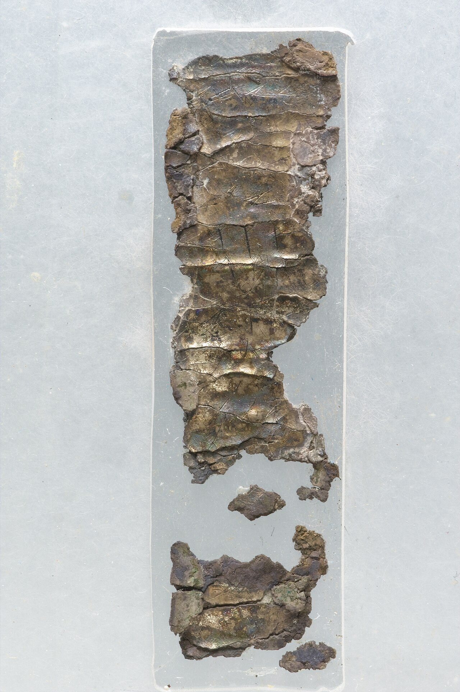

Ketef Hinnom Silver Scrolls

- Find Name
- Ketef Hinnom Silver Scrolls
- Historical Period
- Iron Age II
- Artifact Date
- c. 600 BC
- Date Discovered
- 1979
- Discovery Location
- Ketef Hinnom, Jerusalem, Israel
- Current Location
- Israel Museum, Jerusalem
- Timeline Era
- Divided Monarchy
- Description
- Two tiny rolled silver amulets found in a burial cave overlooking the Hinnom Valley, unrolled with great difficulty by conservators. They bear a Hebrew inscription closely matching the priestly blessing of Numbers 6.
- Biblical Significance
- These are the oldest surviving texts from the Hebrew Bible, dating to before Jerusalem fell to Babylon. That a family treasured 'The LORD bless you and keep you' on silver centuries before Christ is a tender, hope-anchored witness that God's blessing was already on His people's lips and hearts.
- Evidence Class
- Direct
- Interpretations
- Scholars agree these silver scrolls carry the priestly blessing of Numbers 6 and date to the 7th–6th century BC, making them the oldest known biblical text; minor debate concerns their exact date within that range.
- Scripture Illuminated
- Related People
- Related Books
- Related Places
- Related Events